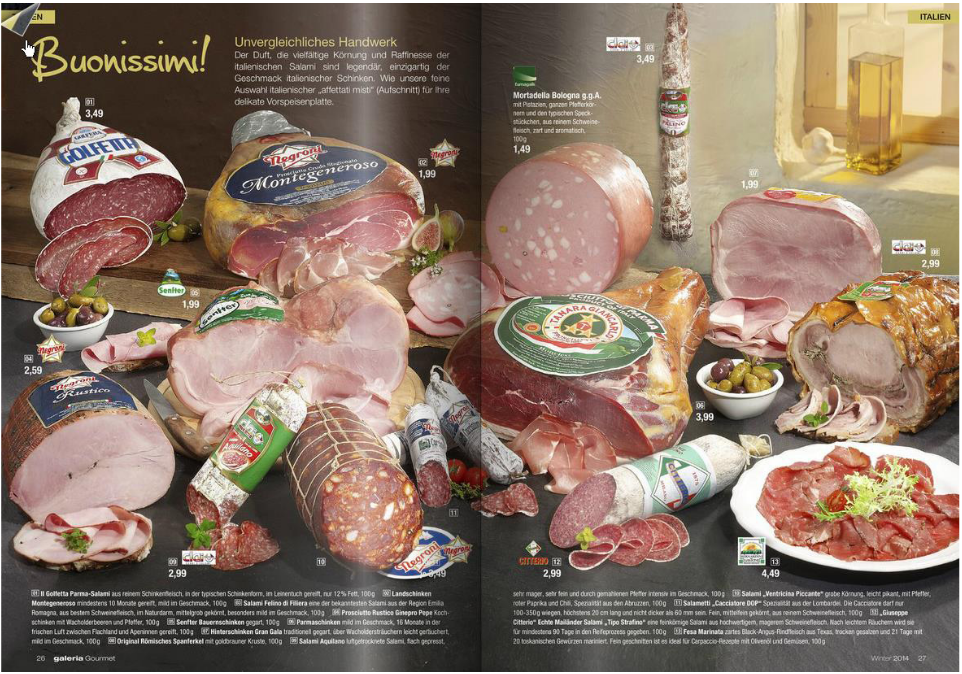
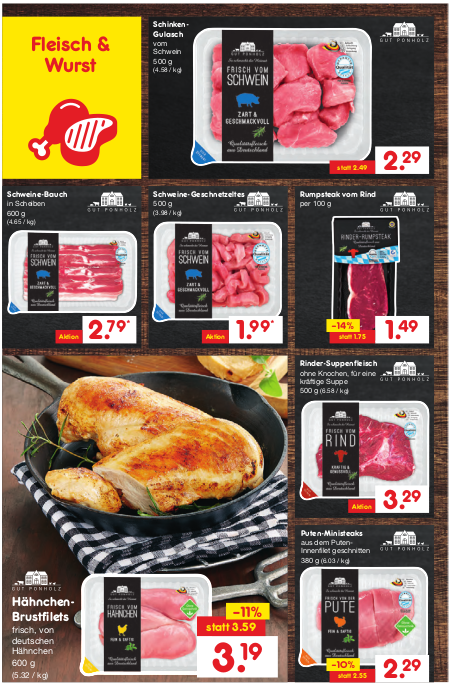
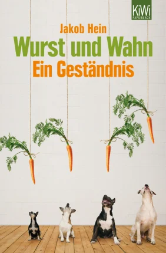

9 Fleischeslust: Wurst oder keine Wurst?
| Themen | Essen, Einkaufen, Fleisch, Vegetarismus |
| Lernziele | Sie können Bedeutungsproduktion im Nahrungsmittel-Diskurs (Werbung, literarische Texte) erkennen, durchschauen und an ihr mitwirken. |
| Quelle | Hamann u. a. (2016) |
Sehen Sie sich die Werbeprospekte an. Wie werden die Produkte präsentiert? An wen richten sich die Prospekte? Vergleichen Sie und tauschen Sie sich mit einem Partner aus.
| Kaufhof | Netto | Selgros |
|---|---|---|
|  |  |
Was würden Sie kaufen? Warum (nicht)? Schreiben sie die Gründe, die aus Ihrer Sicht für oder gegen den Kauf sprechen, in eine Tabelle.
| Prospekt | Gründe für den Kauf | Gründe gegen den Kauf |
|---|---|---|
| Kaufhof | ||
| Netto | ||
| Selgros |
In Deutschland wird heftig diskutiert, ob Fleisch essen okay ist. Hier sind ein paar Kommentare aus einem Internetforum. Welche Gründe führen die NutzerInnen für oder gegen Fleischkonsum an? In welchem Ton bringen sie ihre Gründe vor? Diskutieren Sie mit und schreiben Sie Ihre Meinung.
UpdateDotExe 1 year ago
Ich bin so hart dafür, dass diese Konsumgesellschaft, in der wir leben, mal n Ticken runterfährt. Es würde keinen Schaden, weniger Fleisch zu essen. Generell ist es furchtbar, wie wir mit allen Gütern zu jeder Zeit unbedingt zu 100% versorgt werden müssen. Minimalismus, wenn auch nur ein wenig, täte allem - uns, der Umwelt, dem Klima, ALLEM - so unglaublich gut!
Exoplanetling 1 year ago
@ UpdateDotExe Geh mit besten beispiel voraus und inspiriere andere 😊 Sobald Menschen das günstige Fleisch wollen, wird es auch “produziert”, also Tiere dafür ermordet. Aber sieh es doch mal positiv und schau dir die stark wachsenden Zahlen von Vegetariern und Veganern an 🙂
Mogol Ottis 1 year ago
@ UpdateDotExe blablabla
Robert Parker-Garlsen 1 year ago
Ich, als jemand der immer und viel Fleisch gegessen hat, lasse es seit Anfang dieses Jahres einfach weg… und seltsamer Weise hab ich es nie vermisst. Soll ja jeder machen, wie er will, aber ich kann nur raten, wenn man ethische Bedenken wegen des Fleischkonsums hat; einfach mal für eine Woche weglassen, vielleicht fällt es einem leichter, als man denkt.
ToastScheibe1.0 7 months ago
Die Dosis macht das Gift👌 ein einfacher Spruch den man sich gut merken kann
n00b_m1t_br0t 5 months ago
Ich liebe Fleisch … ich könnte theoretisch täglich Fleisch essen. Egal ob Rind, Schwein oder Huhn. Aber die Argumente der Vegetarier oder Veganer sind einfach besser … die Diskussion kann man als Fleischesser nur verlieren. Ob ich aufhören werde Fleisch zu essen? Wahrscheinlich nicht. Ob ich dafür bin, dass man den Großteil aller Mastbetriebe abschafft? Aber sowas von. Wir sind ein so fortschrittliches Land. Wie kann es sein, dass wir 1kg Huhn für 2-3 € kaufen können? Es sollte keine Massenbetriebe mehr geben dürfen. […] Fleisch sollte viel teurer sein. Es sollte ein größeres Angebot an nicht fleischlichem Essen geben. […]
Pause
- Schauen Sie das folgende Musikvideo der österreichischen Band BlechReizPop an. Das Lied hat den Titel Vollblut-Vegetarier. Passen Bild und Text zusammen?
- Wie ist wohl diese Liedzeile zu verstehen?
Manchmal, ja, da war ich ein
Vollblut-Vegetarier.
Doch bei mir daheim um die Ecke,
da gönne ich mir einen Speck.

Ein ähnliches Dilemma beschreibt der Schriftsteller Jakob Hein in seinem 2013 erschienenen Buch Wurst und Wahn. Sie haben einen Auszug als Hausaufgabe gelesen. Hören Sie den Auszug noch einmal, gelesen vom Autor, und lesen Sie mit. Worum geht es in dem Auszug? Sprechen Sie mit Ihrer Partnerin.
Streichen Sie die falschen Angaben in den Sätzen.
Der Ich-Erzähler hat sich das erste Mal gewundert, als die Fleischerei Hess geöffnet / geschlossen wurde. Diese Irritation verursacht, dass er sich seines Standpunktes zu Fleisch / Gemüse bewusst wird: Er isst gerne / nicht gerne Fleisch / Gemüse. Heute ist der Ich-Erzähler Fleischesser / Vegetarier, obwohl / weil er gerne Fleisch ist. Er beschreibt sich als Mensch, der sich nicht gerne / gerne anpasst.
Lesen Sie noch einmal die folgenden Textstellen. Welche Assoziationen haben Sie? Diskutieren Sie in der Gruppe.
Umzingelt von Biomärkten, Gemüseläden und Läden mit selbst gepressten Säften und fair gehandelten Kaffeegetränken konnte Hess nicht mehr existieren.
[…] im Supermarkt richteten sie einen abgetrennten Bereich für den Fleischverkauf ein, den nur Erwachsene betreten durften.
Entspannt konnte man Fleisch nur noch im schlimmen Viertel unserer Stadt kaufen.
Warum ich damals Vegetarier geworden bin, kann ich heute nur noch rekonstruieren, nicht mehr verstehen.
Zusatzaufgabe
Wie beschreibt der Ich-Erzähler die Welt früher und die Welt jetzt? Ergänzen Sie die Tabelle.
| Welt früher | Welt jetzt |
|---|---|
| Was hat man gemacht? |
Was macht man jetzt? |
| Welchen Laden gab es vorher in der Allee? |
Welche Läden gibt es jetzt? |
| Was wurde früher in den Läden im Viertel verkauft? |
Was wird in den Läden im Viertel verkauft? |
| Wie wird die Situation beschrieben? |
Wie wird die Situation beschrieben? |
Wie verstehen Sie jetzt den Titel von Heins Buch Wurst und Wahn?